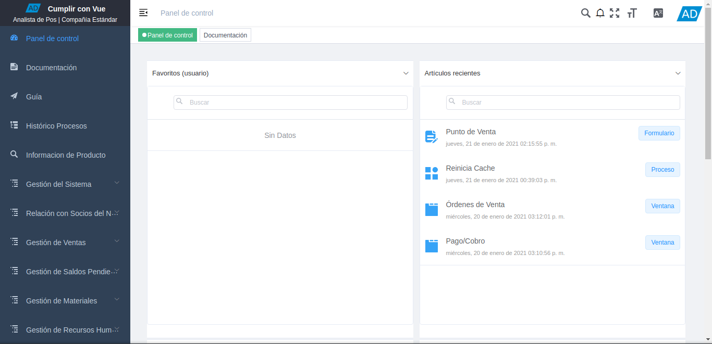
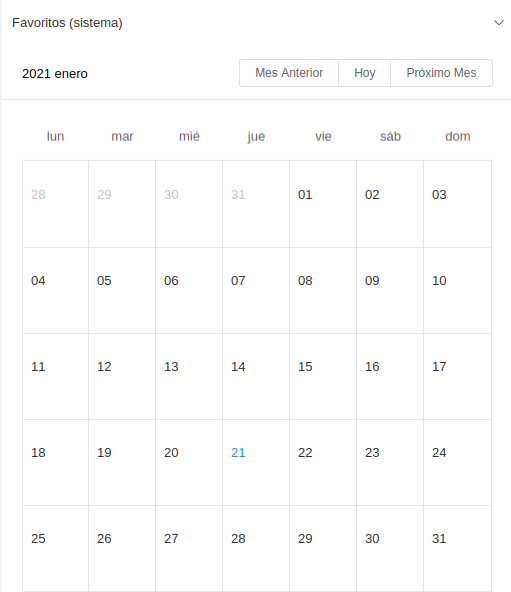

1.2. Interfaz de Usuario¶
La interfaz de usuario es el medio por el cual el usuario podrá comunicarse con ADempiere, comprende todos los puntos de contacto entre el usuario y ADempiere. Su objetivo principal es que el usuario se familiarice con ADempiere a través de ciertos elementos, la interfaz cuenta con una serie de elementos los cuales se describen a continuación.

Imagen 1. Interfaz del Usuario
1.2.1. Menú de ADempiere¶
Se encuentra conformado por una serie de carpetas que contienen sub-carpetas, ventanas, procesos, reportes y smart browser (ventana de búsqueda inteligente), que el usuario puede elegir para realizar determinadas tareas.
Imagen 2 Menú de ADempiere

1.2.2. Favoritos del Usuario¶
Muestra las ventanas, procesos, reportes y smart browser establecidas como favoritos por el usuario. Para agregar dichos elementos a esta sección se debe arrastrar y sueltar aquí, los elementos desde el menú. Otra forma de agregar los elementos es haciendo clic derecho para agregar carpetas.
Imagen 3. Favoritos del Usuario

1.2.3. Artículos Recientes¶
Muestra los artículos recientemente abiertos y modificados, puede hacer clic en cualquiera de los elementos para abrirlos. El listado de esta sección se actualiza periódicamente.
Imagen 4. Artículos Recientes

1.2.4. Tareas Pendientes¶
Muestra todos los procesos o documentos que el usuario tiene pendientes por finalizar.
Imagen 5. Tareas Pendientes

1.2.5. Notificaciones¶
Imagen 6. Notificaciones
Luego de ejecutar un algún proceso, podrá visualizar el mismo de la siguiente manera
Imagem 7. Proceso Culminado


1.2.6. Pantalla Completa¶
Imagen 8. Pantalla Completa
Note
Seleccione la tecla “ESC”, para salir de la pantalla completa.

1.2.7. Calendarios¶
Se visualiza el calendario con intervalos de días, meses y años.

Imagen 9. Calendarios